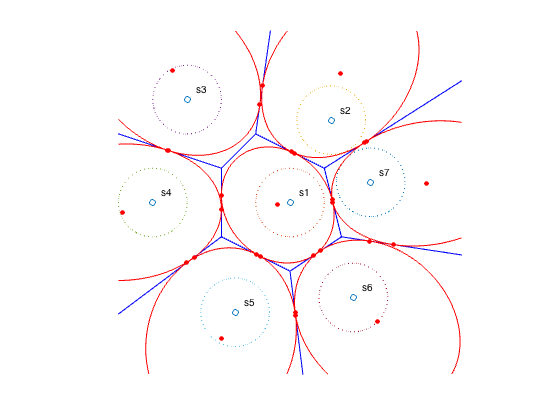
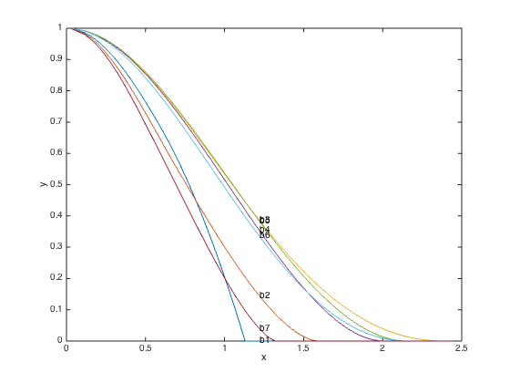
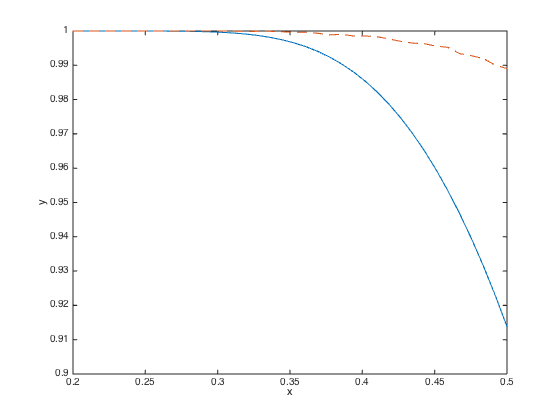

% Boyd & Vandenberghe "Convex Optimization" % Original version by Lieven Vandenberghe % Adapted for CVX by Michael Grant, 2005/12/19 % Generates figures 7.5-7.8 % The constellation points. Feel free to change them, but they must % produce a valid Voronoi diagram. Therefore, there must be three or % more points, and no three can be collinear. To test your selected % points, run VORONOI( Cs(:,1), Cs(:,2) ) and see if a complete diagram % is drawn; if so, your points should work. Cs = [ ... 0, 0 ; ... 1.2, 2.4 ; ... -3, +3 ; ... -4, 0 ; ... -1.6, -3.2 ; ... 1.84615384615385, -2.76923076923077 ; ... 2.35294117647059, 0.58823529411765 ]; Cmax = max(max(abs(Cs))) * 1.25; % Plot the constellation points and the Voronoi tesselation clf Cx = Cs( :, 1 ); Cy = Cs( :, 2 ); m = length( Cx ); Cs = Cs'; [ Vx, Vy ] = voronoi( Cx, Cy ); plot( Vx, Vy, 'b-', Cx, Cy, 'o' ); axis equal axis( Cmax * [ -1, 1, -1, 1 ] ); axis off hold on % Draw unit circles around each constellation point noangles = 200; angles = linspace( 0, 2 * pi, noangles ); crcpts = [ cos(angles) ; sin(angles) ]; for i=1 : m, text( Cx(i)+0.25, Cy(i)+0.25, [ 's', int2str(i) ] ); ellipse = [ cos(angles) ; sin(angles) ] + Cs(:,i) * ones(1,noangles); plot( ellipse(1,:), ellipse(2,:), ':' ); end; % print -deps chebbnds_example.eps % Determine the polyhedrons for each Voronoi region by computing the % Delaunay triangulation; that is, matrices A and b such that % A * ( x - c ) <= b % where c is the constellation point. The faces of a polyhedron for a given % point consist of the perpindicular bisectors of edges of the Delaunay % triangles to which it belongs. m = size( Cs, 2 ); tri = delaunay( Cx, Cy ); ee = sparse( tri, tri( :, [ 3, 1, 2 ] ), 1, m, m ); ee = ee + ee'; for k = 1 : m, v2 = find( ee( :, k ) ); pk = Cs( :, v2 ); qk = Cs( :, k ) * ones( 1, length( v2 ) ); Ak = pk - qk; bk = 0.5 * sum( Ak .* Ak, 1 ); As{k} = Ak'; bs{k} = bk'; end % For each polyhedron, compute lower bounds on the probability of % correct detection with sigma = 1. Check the results by plotting the % ellipsoid x'*P*x + 2*q'*x + r = 1, which should inscribe the polyhedron. ints = 1 : m; % Uncomment to do only the first polyhedron, like the book does % ints = 1; for i = ints( : ).', [ cd_cheb, P, q, r, X, lambda ] = cheb( As{i}, bs{i}, eye(2) ); ellipse = sqrt(1-r+q'*(P\q)) * P^(-1/2) * crcpts + ... (-P\q + Cs(:,i)) * ones(1,noangles); plot( ellipse(1,:), ellipse(2,:), 'r-' ); dots = plot( X(1,:)+Cx(i), X(2,:)+Cy(i), 'ro' ); set( dots, 'MarkerFaceColor', 'red' ); set( dots, 'MarkerSize', 4 ); end hold off % print -deps chebbnds_example2.eps % Compute Chebyshev lower bounds for Prob( As(i) * v <= bs(i) ) % where v = N(Cs(i),sigma) for varying values of sigma nsigma = 500; sigmas = linspace( 0.001, 6.0, nsigma )'; cd_cheb = zeros( nsigma, m ); fprintf( 'Computing lower bounds' ); % Uncomment to match the book ints = 1 : m; % ints = 1 : 3; for i = ints( : ).', for k = 1 : nsigma, cd_cheb(k,i) = cheb( As{i}, bs{i}, sigmas(k) * eye(2) ); end; if rem( k, 10 ) == 0, fprintf( '.' ); end end; fprintf( 'done.\n' ); figure(2) mc = size( cd_cheb, 2 ); plot(sqrt(sigmas(:,ones(1,mc))), cd_cheb); for i = 1 : mc, text( sqrt(sigmas(nsigma/4)), cd_cheb(nsigma/4,i), ['b',int2str(i)] ); end; xlabel('x'); ylabel('y'); axis( [ 0, 2.5, 0, 1 ] ); % For the central set, compute Chebyshev lower bounds, Monte Carlo % estimates, and Chernoff bounds. % for central set, compute cheb lower bounds, mc estimates, % and chernoff bounds % nsigma = 50; sigmas = linspace( 0.1, 0.5, nsigma ); cd1 = zeros( 1, nsigma ); % lower bounds for prob( x in C1 ) mc1 = zeros( 1, nsigma ); % monte carlo estimates of prob( x in C1 ) cher1 = zeros( m-1, nsigma ); % chernoff upper bounds on Prob( x in Cj | s = s_1 ) fprintf( 'Computing lower bounds and Monte Carlo sims' ); for i = 1 : nsigma, % Compute the Chebyshev lower bound on Prob( As{1} * v <= bs{1} ) % for v in N( 0, Sigma ) Sigma = sigmas(i)^2 * eye(2); cd1(i) = cheb( As{1}, bs{1}, Sigma ); mc1(i) = montecarlo( As{1}, bs{1}, Sigma, 10000 ); if rem( i, 5 ) == 0, fprintf( '.' ); end end fprintf( 'done.\nComputing upper bounds' ); for j = 2 : m, A = As{j}; b = bs{j} - A * ( Cs(:,1) - Cs(:,j) ); % Compute the Chernoff upper bound on % Prob( As{j} * ( v + Cs{1} - Cs{j} ) <= bs{j} ) % for v in N( 0, Sigma ) for i = 1 : nsigma, cher1( j - 1, i ) = cher( A, b, sigmas(i)^2*eye(2) ); end fprintf( '.' ); end; fprintf( 'done.\n' ); cher1 = max( 1 - sum( cher1 ), 0 ); figure(4) plot( sigmas, cher1, '-', sigmas, mc1, '--' ); axis( [ 0.2 0.5 0.9 1 ] ); xlabel( 'x' ); ylabel( 'y' ); %print -deps chernoff_example.eps
Computing lower bounds.......done. Computing lower bounds and Monte Carlo sims..........done. Computing upper bounds......done.
  